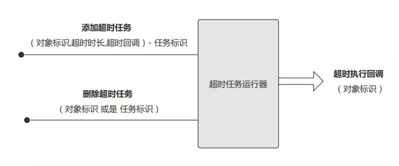
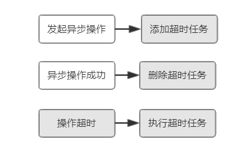
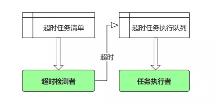
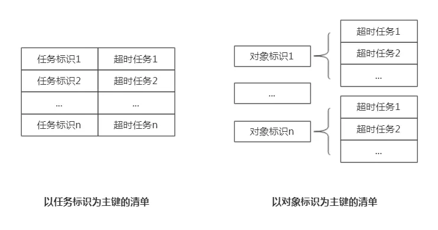

当执行某些动作之后，会期待反馈。最终要么是得到了结果，要么就是超时了。当超时发生时，可能是期望得到通知，或是希望能自动重试，等等。于是设计了一种通用的异步超时的处理机制，以期通过简洁易理解的方式完成超时的处理过程。
从使用的角度，调用方期望的是“指定超时时长，时间到自动执行指定过程”，由此可以得出外部的操作接口参数。从功能角度来看，对于未超时的情况，需要提供在超时时长内随时清除超时任务的功能。
在这里，我们把设计的机制称里“超时任务运行器”，从外部来看，其接口与功能结构如下：
（1）添加超时任务，带上对象标识用于回调时传参，指定超时时长和超时回调方法即可把超时处理交给超时任务运行器。返回一个任务标识，用于后续可删除该超时任务。
（2）删除超时任务，指定任务标识即可删除。同时，支持清除一个对象的所有超时任务。

发起异步操作的同时，添加超时任务，在异步操作成功时，删除超时任务。超时则运行器会自动执行超时任务。如下图，灰色部分由运行器完成：

首先，时长的精确粒度设定为秒，这表示超时最低可支持秒级（废话）。设计的基本思路为：对于加入的超时任务，运行器建立清单，并以秒为单位对清单中的任务进行检测，对于时间已经到达或超过的将其移动至超时任务执行队列中，由独立的超时任务运行线程来执行队列中的任务。这里，移动任务至执行队列的检测者谓之“生产者”，任务执行线程谓之“消费者”。
运行器维护一个超时任务清单和一个执行队列，一个超时检测者，它使用定时器检测任务是否超时并将超时的加入执行队列，一个任务执行者负责运行超时任务中的回调过程。

超时任务信息，除了调用者传递的对象标识、超时时长与回调方法，还包括其它运行过程中所需的属性：任务标识、运行时间点。同时为了在回调时能利用到一些对象相关的上下文信息，再增加一个 context 属性，它将作为参数传递给回调函数，详细信息看如下类定义：
/// <summary>
/// 超时回调的委托
/// </summary>
/// <typeparam name="T"></typeparam>
/// <param name="objectKey"></param>
/// <param name="context"></param>
public delegate void TimeoutCallback<T>(T objectKey, String context);
/// <summary>
/// 超时任务信息
/// </summary>
/// <typeparam name="T"></typeparam>
public class TimeoutTask<T>
{
// 任务标识（由超时任务运行器自动分配）
public long TaskId { get; set; }
// 对象标识
public T ObjectKey { get; set; }
// 超时秒数
public int TimeoutSeconds { get; set; }
/// <summary>
/// 以秒为单位的 Tick 值，由超时任务运行器根据当前时间加上超时秒数计算设置
/// DateTime.Ticks 是以 10ns（10纳秒） 为单位
/// 将其除以 10 单位为 ws（微秒），再除以 1000 为 ms（毫秒），再除以 1000 为 s（秒）
/// 累计为 DateTime.Ticks / 10000000
/// </summary>
public long ExecuteSecondTicks { get; set; }
// 超时回调方法
public TimeoutCallback<T> Callback { get; set; }
/// <summary>
/// 用于保存一些回调时使用的上下文信息
/// </summary>
public String Context { get; set; }
}任务清单，在操作粒度上，可以以任务标识为单位，也可以以对象标识为单位，因此，为了快速检索。任务清单分两种形式存储，一种以任务标识为主键，另一种以对象标识为主键，其结构如下：

具体类型结构定义如下，_DictionaryLocker 有于同步加锁，确保线程安全。
// 以 TaskId(任务标识) 为 KEY 的任务清单字典
private Dictionary<long, TimeoutTask<T>> _TaskIdDictionary = new Dictionary<long, TimeoutTask<T>>();
// 以 ObjectId(任务相关对象标识) 为 KEY 的任务字典，因每个对象可以有多个超时任务，所以为列表
private Dictionary<T, List<TimeoutTask<T>>> _TaskObjectKeyDictionary = new Dictionary<T, List<TimeoutTask<T>>>();
// 用于同步操作上述两个清单字典，使得线程安全
private object _DictionaryLocker = new object(); 一个普通的先进先出的队列，_RunLocker 用于线程安全加锁。
// 已超时任务队列，由任务运行线程逐个执行
private Queue<TimeoutTask<T>> _TaskRunQueue = new Queue<TimeoutTask<T>>();
// 用来同步操作任务队列，使得线程安全（生产者，消费者模式）
private object _RunLocker = new object();以每秒进行一次检测的粒度运行，使用 System.Timers.Timer 非常合适，它的职能是判断运行时间到达与否决定是否将任务移至执行队列。
// 超时检测者，每秒扫描是否达到超时，超时则加入超时任务队列
private System.Timers.Timer _TimeoutChecker = new System.Timers.Timer();
// 超时检测者
_TimeoutChecker.Interval = 1000;
_TimeoutChecker.Elapsed += new System.Timers.ElapsedEventHandler(CheckTimerTick);
_TimeoutChecker.Start();
/// <summary>
/// 超时任务检测者
/// 对于，时间已经超过了设定的超时时间的，加入超时任务执行队列
/// </summary>
/// <param name="sender"></param>
/// <param name="e"></param>
private void CheckTimerTick(object sender, System.Timers.ElapsedEventArgs e)
{
long secondTicks = DateTime.Now.Ticks / 10000000;
// 遍历，把时间已到达超过超时时间的找出来
lock (_DictionaryLocker)
{
foreach (var key in _TaskIdDictionary.Keys.ToList())
{
var task = _TaskIdDictionary[key];
if (_TaskIdDictionary[key].ExecuteSecondTicks <= secondTicks)
{
// 加入超时任务执行队列，并移除清单
lock (_RunLocker)
{
_TaskRunQueue.Enqueue(task);
RemoveTimeoutTask(task.TaskId);
}
// 有生产，则通知执行线程（消费者）
_WaitHandle.Set();
}
}
}
}执行队列中存在任务时就执行，否则等待。线程等待，这里使用了 EventWaitHandle，EventWaitHandle.WaitOne 等待，生产者使用 EventWaitHandle.Set 方法进行通知，配合起来有效地运行队列中的任务。
// 超时任务执行线程
private Thread _TaskRunThread;
// 用于同步操作任务队列的线程信号（生产者，消费者通知作用）
private EventWaitHandle _WaitHandle = new AutoResetEvent(false);
// 用于退出执行线程的一个标识
private bool _Working = true;
/// <summary>
/// 超时任务执行线程主体
/// </summary>
private void TaskRunning()
{
while (_Working)
{
TimeoutTask<T> task = null;
lock (_RunLocker)
{
if (_TaskRunQueue.Count > 0)
{
task = _TaskRunQueue.Dequeue();
}
}
// 存在超时任务执行其回调
if (task != null)
{
task.Callback(task.ObjectKey, task.Context);
}
else
{
// 等待生产者通知
_WaitHandle.WaitOne();
}
}
}代码如是说：
/// <summary>
/// 指定对象标识，超时时长（秒为单位），超时执行回调，加入到超时检测字典中
/// </summary>
/// <param name="objectKey"></param>
/// <param name="timeoutSeconds"></param>
/// <param name="callback"></param>
/// <param name="context"></param>
/// <returns></returns>
public long AddTimeoutTask(T objectKey, int timeoutSeconds, TimeoutCallback<T> callback, String context)
{
TimeoutTask<T> task = new TimeoutTask<T>();
task.ObjectKey = objectKey;
task.TimeoutSeconds = timeoutSeconds;
task.Callback = callback;
long taskId = GetNextTaskId();
task.TaskId = taskId;
task.ExecuteSecondTicks = DateTime.Now.Ticks / 10000000 + timeoutSeconds;
task.Context = context;
lock (_DictionaryLocker)
{
// 以任务标识为主键的任务清单
_TaskIdDictionary[taskId] = task;
// 以对象标识为主键的任务清单
if (_TaskObjectKeyDictionary.ContainsKey(objectKey))
{
_TaskObjectKeyDictionary[objectKey].Add(task);
}
else
{
List<TimeoutTask<T>> list = new List<TimeoutTask<T>>();
list.Add(task);
_TaskObjectKeyDictionary[objectKey] = list;
}
}
return taskId;
}
/// <summary>
/// 根据对象标识移除超时任务设置
/// </summary>
/// <param name="objectKey"></param>
public void RemoveTimeoutTask(T objectKey)
{
lock (_DictionaryLocker)
{
if (_TaskObjectKeyDictionary.ContainsKey(objectKey))
{
// 在任务标识为主键的清单中移除相应的该对象的多个超时任务
foreach (var task in _TaskObjectKeyDictionary[objectKey])
{
_TaskIdDictionary.Remove(task.TaskId);
}
_TaskObjectKeyDictionary[objectKey].Clear();
}
}
}
/// <summary>
/// 根据任务标识移除超时任务设置
/// </summary>
/// <param name="taskId"></param>
public void RemoveTimeoutTask(long taskId)
{
lock (_DictionaryLocker)
{
if (_TaskIdDictionary.ContainsKey(taskId))
{
var task = _TaskIdDictionary[taskId];
_TaskIdDictionary.Remove(taskId);
// 在对象标识为主键的清单移除相应的超时任务
_TaskObjectKeyDictionary[task.ObjectKey].Remove(task);
}
}
}定义回调处理方法，添加一个超时任务只需要指定简单的参数即可，如下示例，会按什么顺序输出什么呢？
class Program
{
static void Main(string[] args)
{
TS.Task.TimeoutTaskRunner<string> runner = new TS.Task.TimeoutTaskRunner<string>();
TS.Task.TimeoutCallback<string> callback = (string key, string context) =>
{
Console.WriteLine(key + " is timeout.");
};
runner.AddTimeoutTask("a", 4, callback, null);
runner.AddTimeoutTask("b", 3, callback, null);
runner.AddTimeoutTask("c", 2, callback, null);
Console.ReadKey();
runner.Dispose();
}
}运行结果：
超时处理在异步通信中经常会碰到，实现超时处理的通用机制，能有效的复用代码，提高效率。代码仍然有很多优化空间，如遍历检测超时是否有更合适的的方式等，欢迎探讨！
完整代码请访问：